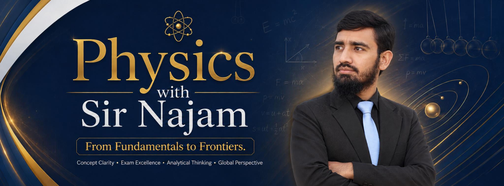

LEARN · EXPLORE · PRACTISEYour Physics journey,
all in one place.
A personal home for learning resources, interactive simulations, assessment practice and—soon—your progress across topics and learning outcomes.
Just exploring? Visit our public learning hub for a preview. Selected simulations will remain publicly accessible.
portal/firebase-config.js using your Firebase Web App settings before trying to sign in.Sign in to your portal
Access your personal Physics learning space.
New to Physics with Sir Najam?
Before creating an account, read our pilot privacy information ↗. This portal is still in controlled testing.
Create your free account
Every new account starts as an independent student. Teachers are appointed separately by the administrator.
Review what information we store and how to request deletion ↗ before registering.
Already registered?
Pilot environment. Public enrollment of minors and live academic records require appropriate privacy information and consent arrangements before launch.
Reset your password
Enter your email address to request a password-reset link.
Verify your email
We sent a verification link to your email address. Open that email, click its link, and then return here.
Can't open your dashboard yet
The profile database needs attention.
Welcome, Student.
Your personal Physics learning space connects Unit 1 resources, activities, tests and targeted revision. Select your next step below.
Your learning home
My Physics Learning Hub
Study concepts, explore original simulations, practise exam-style questions, and revisit your progress—all from one place.
Your four-step learning path
Available learning unit
Grade XI · Unit 1Learning resources & activities
What should I practise next?
When you save your first MCQ practice attempt, we can suggest an SLO for further practice.
Practice suggestions are provisional and are based only on the attempts currently loaded.Practise a specific Unit 1 learning outcome
Choose a topic to start a short 4-MCQ self-practice session. Questions and SLO labels are still undergoing academic review.
Access note: This learning hub appears inside your signed-in dashboard, but some linked simulations and assessment pages are currently hosted publicly on Google Sites or GitHub Pages. They are not yet restricted by portal login. Protected content migration is planned before a wider launch.
Grade IX resources are planned
We're preparing an organized Grade IX library. No Grade IX practice bank is connected to this portal yet, so there is no active Grade IX test link here.
Explore available Grade XI resourcesMy Physics Progress
Only practice attempts you explicitly save are recorded. Each test is linked to your current account.
Your analytics include the records loaded so far; older attempts can be retrieved in further pages.
Your recent accuracy trend
Up to 10 latest saved attempts, ordered from earlier to later. Each bar shows correct answers divided by questions answered in that test. Tests may cover different SLOs and are not directly comparable.
Your next revision steps
Suggestions consider accuracy, number of distinct questions and number of saved attempts. They're provisional, not a formal mastery diagnosis.
Learning-outcome performance
SLO accuracy uses answered questions from your saved practice records. A weak-area suggestion requires at least 5 answered questions, 3 distinct MCQs and 2 saved attempts for an SLO; these indicators are provisional because the source question bank remains under academic review.
My saved attempts
The most recent 50 attempts are listed below; the SLO statistics use every record you have loaded, including older pages.
My Physics Progress Report
Officially branded, easy to read, and printable. Save a PDF copy using your browser.
A report opens in a new tab. Select Save as PDF in your browser's print dialog. Data stays in your browser.
Loading archive information…
Your records & privacy
Only results you deliberately save are stored. Your personal attempts are accessible to your signed-in account, not automatically to teachers or other learners. Your downloads contain answers and may reveal your study habits—keep them private.
Important: PDF and advanced exports include only the records loaded on this screen, not a guaranteed full-account archive until all older pages have been loaded. Deleting a Firebase login would not automatically remove its Firestore practice records; a verified deletion workflow is still planned, and is not offered by this pilot.
Accuracy and SLO recommendations are provisional, based on browser-graded self-practice and unverified curriculum metadata—not official examination grades.
My Privacy & Account Data
Your profile and saved self-practice attempts are stored under your Firebase account. The PDF and archive exports above include only currently loaded attempts; use “Load 25 older attempts” until the archive says complete before making a full copy.
Controlled pilot: Don't send passwords or private keys in a deletion request. A request can be recorded here, but complete deletion and retention procedures are not yet automated or independently audited. We will not claim deletion until all applicable records have actually been removed.
Administrator Console.
A private, read-only overview for the sole authorized administrator. Student registration stays independent and unrestricted by classes.
Administration roadmap
admin: true claim can list basic profiles. A student cannot gain this right by modifying the browser or a Firestore document. No teacher, class, payment, or membership management writes have been enabled. Self-practice attempts are private to their learner account; administrators do not receive blanket access to independent learners’ attempt history. Existing learning resources are still public until separately migrated.